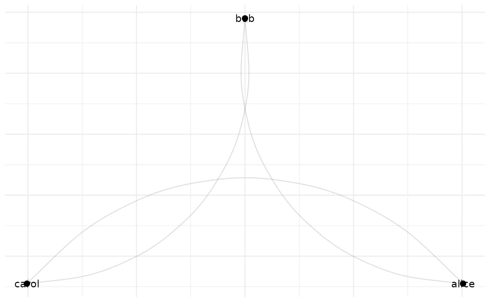

assembles a complete network plot from netify plot components. this function automatically adds all available layers (edges, nodes, text, labels, and their repel versions) in the correct order with appropriate scale resets between layers.
Details
this function provides a convenient way to reassemble a plot from its
components after extracting them with return_components = TRUE.
it automatically:
adds layers in the correct order (edges, nodes, text/text_repel, labels/label_repel)
inserts scale resets between layers when necessary
handles both standard and repel versions of text and label layers
includes facets and themes if present
Examples
# \donttest{
# create a netify object
mat <- matrix(c(NA, 1, 0, 0, NA, 1, 1, 0, NA), 3, 3,
dimnames = list(c("alice", "bob", "carol"),
c("alice", "bob", "carol")))
net <- new_netify(mat, symmetric = FALSE)
# get plot components
comp <- plot(net, return_components = TRUE)
# reassemble the plot
p <- assemble_netify_plot(comp)
print(p)

# }